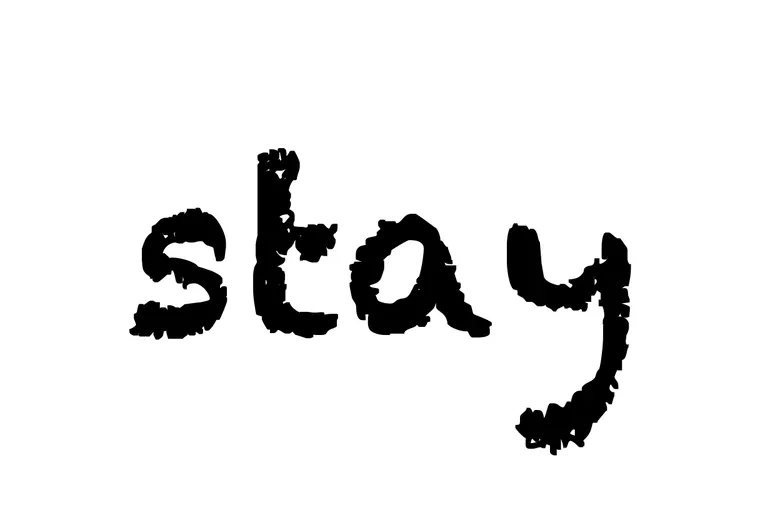
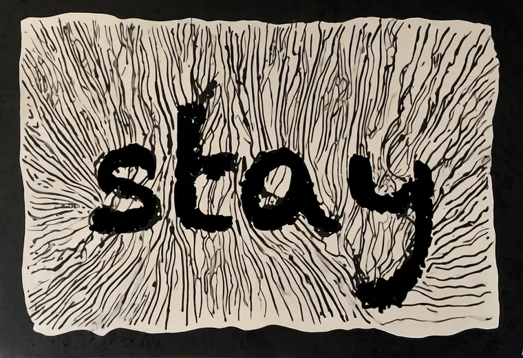
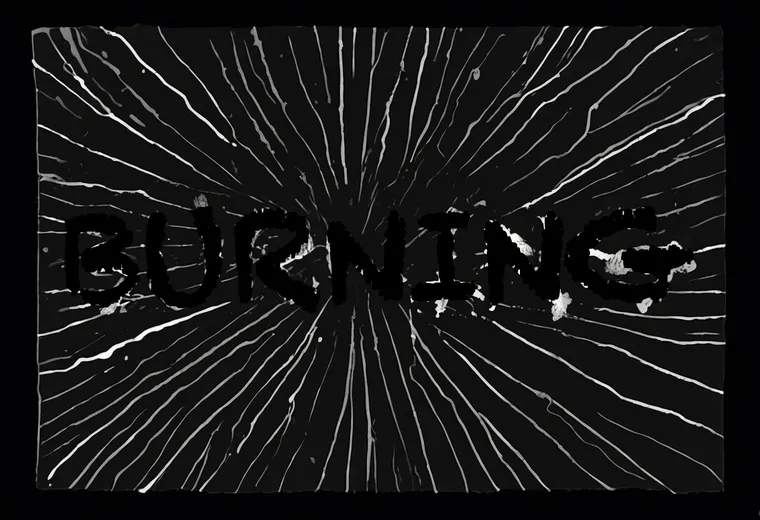

The knockout leaves the font black and lets the ink flow around it. The page warns that this sings only on a light field; on a dark one the black word vanishes. All seven voices got a knockout, so the bench holds the test already.
A void is only the absence of ink. On a perfectly lit field it is simply a black word. Here is stay's knockout mask on white: the font itself, widened by 2 px, exactly as the knockout cuts it.

stay's ink came out as a cream scratchboard. The void reads at once: every edge of the word has light against it.

BURNING's ink came out as white rays on black. The same knockout, pasted into black, has nothing to push against.

Multiply every pixel by the gain. Black times anything is still black, so the void stays exactly as it was; only the field around it lifts. Watch the word arrive.
The void never changed. What made it legible was light on its border.
All seven knockouts, as rendered. Mark each one: does the word read, or does it vanish? Then see where your marks fall against the measure.
The measure appears once all seven are marked.
The reading, after yours. The three light fields (stay, was it real, ASCENSION: 0.57–0.71 at the void's edge, 69–74% of the border lit) read at once. BURNING (0.13) fades into its field; THOOM (0.18) all but does (a second agent reads it, dimly). The middle is the interesting part: NO sits on a mid-grey field (0.28, only 18% of its border above 0.35) and to my eye reads clearly; too late (0.23) reads in patches. So the gotcha holds, with one adjustment two agents' eyes suggest and yours can check; it is an eye call, not a measured threshold: the line falls somewhere between about 0.18 and 0.28, so a mid-grey field carries the void too, not only a light one. The knockout could measure its own border before it ships, and lift a dark field the way the gain step did.